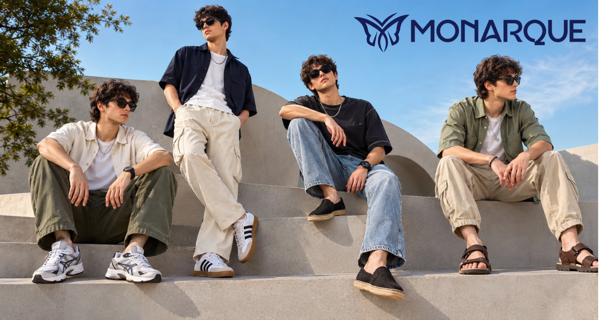

Premium shoes for the luxury lifestyle — born in Peshawar, worn across Pakistan.

MONARQUE is a premium shoe store at Town Tower on Main University Road, Peshawar, built on one simple rule: original only. The market is full of copies — we stock only imported, 100% genuine pairs, from daily-wear sneakers and race-day runners to football boots, premium loafers and medicated comfort shoes.
The butterfly in our mark stands for transformation — the moment a great pair of shoes changes how you walk into a room. Today the store carries 170+ styles from Nike, Adidas, ASICS, On Running, Hoka, New Balance, Onitsuka Tiger, Skechers and more, in sizes EU 40 to 45, and ships them anywhere in Pakistan with Cash on Delivery.
Sneakers, runners, football, loafers, comfort and sandals — one store.
No copies and no "first copies". If it is on our shelf, it is genuine.
Shop 17-18, Basement, Town Tower, Main University Road, Peshawar.